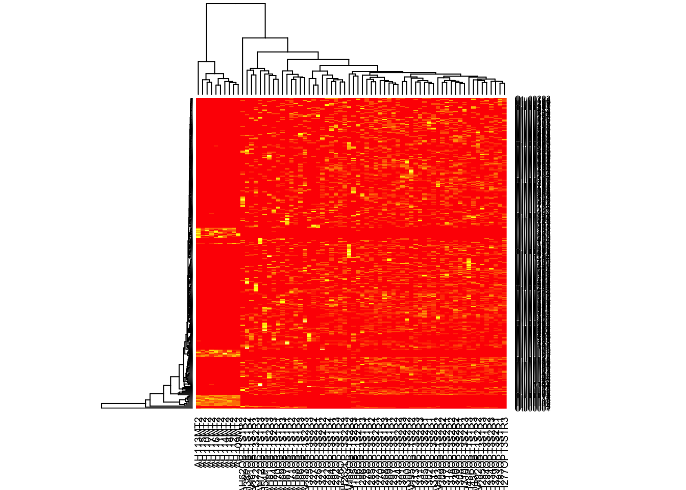
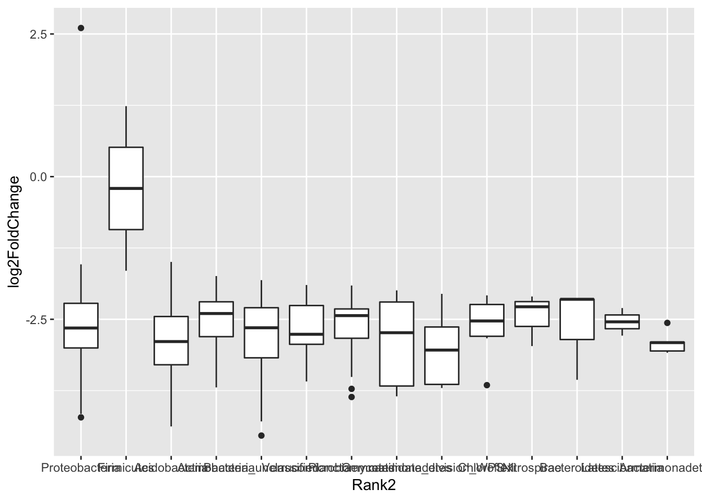

16S Community Analysis
Last updated 7/23/2018
Background
I used this workflow to analyze 16s Miseq data from the Grinnell CAFO project, but this tutorial should be applicable to any 16s data.
In order to better understand this tutorial, you will need a basic understanding of bash, and R. If you are want to learn either or need a review, see the helpful references tab. I try to show all of the details, but I may accidentally gloss over rudimentary skills. You should be able to do a quick google search and find what you need in that case. If not, feel free to ask me.
You will also need the following installed on an AWS instance(see MOTHUR hints for instance storage details) or HPC (See references for help):
- MOTHUR (There is a preloaded AWS instance that is convenient, but you can also load a fresh MOTHUR)
You will also need the following installed on your own computer (See references for help):
So you have 16s sequences from the Miseq and the programs above set up, lets begin. If you don’t have 16s sequences yet, the preloaded mothur AMI has sequences you can use.
MOTHUR
Prepping MOTHUR
If you are using the preloaded AMI, delete all the files in the ~/data/raw directory. If you aren’t these instructions may help setting up mothur.
Head into the ~/data/references directory and make sure your references are up to date. We will be using the SILVA (use the full NR database) and rdp references files. You can delete the HMP_mock file, and upload your own mock community reference to the ~/data/references directory.
#You can upload the references directly to the server using the command wget. This saves your own computer lots of space. Make sure to update the reference links in the commands.
#https://mothur.org/wiki/Silva_reference_files
wget -P data/references https://mothur.org/w/images/a/a4/Silva.seed_v128.tgz
tar xvzf data/references/Silva.seed_v128.tgz -C data/references
rm data/references/Silva.seed_v128.tgz data/references/README.*
#https://mothur.org/wiki/RDP_reference_files
wget -P data/references https://mothur.org/w/images/c/c3/Trainset16_022016.pds.tgz
tar xvzf data/references/Trainset16_022016.pds.tgz -C data/references
rm data/references/Trainset16_022016.pds.tgz
mv data/references/trainset16_022016.pds/* data/references
rm -rf data/references/trainset16_022016.pds data/references/README.*Using FileZilla, transfer the sequences (including the mock community if you have it) into the ~/data/raw directory.
After the references are updated and sequences uploaded, MOTHUR should be prepped and ready to go.
Running MOTHUR
I thought about writing an original tutorial for using MOTHUR, but it would be redundant. Pat Schloss and co. made an amazing tutorial and now that you are set up, you should be able to follow the tutorial exactly. Using the defaults should work well for our purposes. For this tutorial, you will only need to follow the tutorial through to the “Analysis” section, where you rename files right before subsampling, but you are welcome to complete the MOTHUR tutorial. Once you have files called “stability.opti_mcc.shared” and “stability.cons.taxonomy” you are good to move on to the next section.
However, I will give you some helpful hints, and solutions to problems I encountered.
- File names can be what ever you want them to be. They don’t need to end in “.stability”. Make sure they make sense to you and are easy to keep track of. Ideally, they also would make sense to other people, too.
- Warnings are just warnings. Be aware of them, but it’s probably ok to continue on. Errors will not let you continue.
- Don’t just blindly follow the tutorial. Understand what each step does and pay attention. Sometimes, the defaults won’t work or throw away too many sequences!
- I recommend doing the analysis in one session (might require skill with tmux), but you can do MOTHUR in multiple sessions. If you do multiple sessions, make sure you are calling the right directories (I used set.dir a lot).
If at some point MOTHUR is not behaving and you get stuck, be mindful of the following:
- Try going back and redoing the commands from the previous section. MOTHUR requires steps be in exact order, and its possible you missed a prior command or did not work properly.
- MOTHUR takes up a huge amount of space. It outputs lots of text files per a sequence, and each sequence is already taking up a large amount of memory. Try restarting on a larger instance with more memory. To analyze about 150 sequences, I had to use a m4.4xlarge and added on even more storage. NOTE: THE LARGER THE INSTANCE THE MORE IT COSTS. (update 7/24/18) AMAZON ALSO JUST CHANGED THEIR POLICY. YOU NEED TO ASK PERMISSION TO USE LARGER INSTANCES. PLAN AHEAD, BECAUSE IT MAY TAKE TIME TO OBTAIN.
- The MOTHUR forums can be helpful, but they are hard to search.
- Use google as a last resort.
- Email lopatto@grinnell.edu with the log file and description of the problem. I may be able to help you, but if I’m not, I have access to people who know more than me.
Make sure to cite: Kozich JJ, Westcott SL, Baxter NT, Highlander SK, Schloss PD. (2013): Development of a dual-index sequencing strategy and curation pipeline for analyzing amplicon sequence data on the MiSeq Illumina sequencing platform. Applied and Environmental Microbiology. 79(17):5112-20.
Once you have the file called “stability.opti_mcc.shared” and “stability.cons.taxonomy”, save it to your personal computer and you are ready to move on.
R Analysis (Phyloseq)
Loading and prepping the data
So now that you have “stability.opti_mcc.shared” and “stability.cons.taxonomy”, you should boot up Rstudio and are ready for analysis. For the purposes of this tutorial, I will show mostly everything that doesn’t take up too much space - both the r code input (in gray) and raw output (in white) including warning messages. A lot of this is modified from the Phyloseq tutorial.
First, load the libraries. Some of these may be redundant, but thats a problem to solve at a later date. There will be lots of warnings too, but it should be fine to ignore them.
library(ape)
library(grid)
library(plyr)
library(reshape)
library(reshape2)
library(ggthemes)
library(gridExtra)
library(corrplot)
library(dplyr)
library(vegan)
library(SpadeR)
library(ggplot2)
library(RColorBrewer)
library(phyloseq)
library(DESeq2)Lets import the data. You should also make and import a meta data .csv file. The meta file will contain details about each sample (ex. temperature and date).
#Importing output from MOTHUR
darte_ed_16s <- import_mothur(mothur_shared_file = "~/Desktop/stability.opti_mcc.shared", mothur_constaxonomy_file = "~/Desktop/stability.cons.taxonomy")
darte_ed_16s## phyloseq-class experiment-level object
## otu_table() OTU Table: [ 19061 taxa and 156 samples ]
## tax_table() Taxonomy Table: [ 19061 taxa by 6 taxonomic ranks ]#Importing metadata
metadata <- read.csv("~/Desktop/16slabels.csv", row.names=1)
head(metadata)## Day Type Site Sample. Replicate Depth ID DT
## AH37POBT1S1R1 11/8/16 Soil 1 1 1 low 1 11/8/2016 Soil
## AH38POBT1S1R2 11/8/16 Soil 1 1 2 low 2 11/8/2016 Soil
## AH39POBT1S1R3 11/8/16 Soil 1 1 3 low 3 11/8/2016 Soil
## AH40POBT1S1R1 11/8/16 Soil 1 2 1 low 4 11/8/2016 Soil
## AH41POBT1S1R2 11/8/16 Soil 1 2 2 low 5 11/8/2016 Soil
## AH42POBT1S1R3 11/8/16 Soil 1 2 3 low 6 11/8/2016 Soilsample <- sample_data(metadata)
sample_data(darte_ed_16s)<- sample
darte_ed_16s## phyloseq-class experiment-level object
## otu_table() OTU Table: [ 19061 taxa and 155 samples ]
## sample_data() Sample Data: [ 155 samples by 8 sample variables ]
## tax_table() Taxonomy Table: [ 19061 taxa by 6 taxonomic ranks ]Our data is messy. It’s not rarefied. It has NTC sequences in it. It has lots of small taxa with very low abundances. The following will clean your data in various ways, so you can graph and analyze it in many ways. We won’t use all of the cleaned data types in this tutorial, but it gives you options to think about. Make sure to change details, like your definition of too small taxa abundance, to fit your needs.
Common question: What depth do I rarefy at? Answer: Well there isn’t a right answer. Currently, I’ve heard rarefying at 10,000 sequences is ideal, and no less than 5,000 sequences. You can make a rarefaction curve in MOTHUR and plot it in R, to make a more precise decision. But, I like Pat Schloss’s advice: If you have crappy data (rarefying at anywhere near 5,000 sequences eliminates too much of your data to answer your questions), redo the sequencing, sequence more replicates, or get more DNA. If you can’t, rarefy at the lowest depth that answers your questions. Pat says the lowest he has gone is about 500 sequences. This is OK, but you need to be aware that this alters the picture of your data, and acknowledge that in the write up.
Consult others and try different rarefying depths to see if the picture alters. For this tutorial I use 400, because I’m working with bad data.
# set rarefying depth
after_remove_low_depth <- prune_samples(sample_sums(darte_ed_16s) >= 400, darte_ed_16s)
head(sample_sums(after_remove_low_depth))## AH105OBT1S2R3 AH106OBT1S2R1 AH109MT2 AH110MT2 AH111MT2
## 515 619 22510 24628 23400
## AH112MT2
## 19082set.seed(1)
rare <- rarefy_even_depth(after_remove_low_depth, sample.size = 400,rngseed=TRUE)## `set.seed(TRUE)` was used to initialize repeatable random subsampling.## Please record this for your records so others can reproduce.## Try `set.seed(TRUE); .Random.seed` for the full vector## ...## 15128OTUs were removed because they are no longer
## present in any sample after random subsampling## ...head(sample_sums(rare))## AH105OBT1S2R3 AH106OBT1S2R1 AH109MT2 AH110MT2 AH111MT2
## 400 400 400 400 400
## AH112MT2
## 400#remove the NTC sample. Check to make sure it doesn't have too many sequences before you through it away though! NTC and blanks are quality controls.
to_remove <- c("NTC")
pruned <- prune_samples(!(rownames(sample_data(rare)) %in% to_remove), rare)
#filter out OTUs less than 10
#darte_ed_16s_filter <- filter_taxa(pruned, function(x) sum(x) > 10, TRUE)
#relative abundance
darte_ed_16s_filter_re <- transform_sample_counts(pruned, function(x) x /sum(x))
#Get rid of small taxa
darte_ed_16s_filter2 <- filter_taxa(darte_ed_16s_filter_re, function(x) sum(x) > .001, TRUE)
#Combine OTUs with common taxa
darte_ed_16s_filter_re_g = tax_glom(darte_ed_16s_filter2, "Rank2")Figures and statistics in R
Here are some figures and statistical examples that can be tweaked to your preferences.
Stacked Bar Figures
This will give you a stacked bar of taxonomy composition (in this case phyla) for each sample. I also facetted by type. If you want by Genus set fill=“Rank3”. (Or just rename the ranks like a sensible person unlike me)
#stacked bar by sample
plot_bar(darte_ed_16s_filter_re_g, fill="Rank2", facet_grid= ".~Type") + scale_fill_hue()
You can also display select individual samples
plot_bar(darte_ed_16s_filter_re_g, fill="Rank2") + scale_fill_hue() +scale_x_discrete(limits=c("AH110MT2"))## Warning: Removed 1656 rows containing missing values (position_stack).
This will give you the average taxa composition of each treatment type. I borrowed and edited the function from Jin Choi of the GERMS lab at Iowa State University.
#Jin's stacked bar function
# You need to change "DT" into your name of treatment
group_bar_chart <- function(physeq){
fin_table = data.frame()
for (group in unique(sample_data(physeq)$DT) ){
temp_physeq = prune_samples( (sample_data(physeq)$DT == group), physeq)
new_table <- data.frame(taxa_sums(temp_physeq), tax_table(temp_physeq)[,2])
colnames(new_table) = c("abundance", "phylum")
sum_table = data.frame()
for (x in unique(new_table$phylum) ){
temp = subset(new_table, phylum==x)
su = sum(temp$abundance)
sum_table = rbind(sum_table, data.frame(su, temp[1,2]))
}
colnames(sum_table) = c("abundance", "phylum")
perc_table = sum_table
for (i in 1:nrow(sum_table)){
perc_table[i,1] = sum_table[i,1] / sum(sum_table[,1])
}
other_table = data.frame()
other = c()
for (i in 1:nrow(perc_table)){
if(perc_table[i,1] > 0.01) {
other_table = rbind(other_table, perc_table[i,])
}else{
other = c(other, perc_table[i,1])
}
}
sum(other)
tep = data.frame(sum(other), "other")
colnames(tep) = c("abundance", "phylum")
tfin = rbind(other_table, tep)
ttfin = cbind(tfin,group)
fin_table = rbind(fin_table, ttfin)
phy = unique(fin_table$phylum)
}
return(fin_table)
}
#Plot stacked bar. Change levels to your treatment identifications.
fin_table <- group_bar_chart(pruned)
fin_table$group = factor(fin_table$group, levels = c("11/8/2016 Soil","11/12/2016 Manure" ,"11/15/2016 Manure Line","11/15/2016 Soil"))
(p <- ggplot(fin_table, aes(x=group,y=abundance, fill=phylum))+geom_bar(stat="identity",color="black")+labs(y="relative abundance")+ scale_fill_hue()+theme(axis.text.x = element_text(angle = 45, hjust = 1, vjust = 1)))
Boxplot by average phyla
Ok, you caught me. When you average taxa, there should be some display of variance. If we were to add error bars to Jin’s stacked bar plot, it would be too messy. The solution is to plot by taxa. This type of figure can be a good compliment to Jin’s stacked bar and appear in the supplemental info. Alternatively, you could use this figure as your main composition comparison figure. I only plotted the top 10 phyla.
tax <- tax_glom(darte_ed_16s_filter_re_g, taxrank="Rank2")
phylum10 = names(sort(taxa_sums(tax), TRUE)[1:10])
top10=prune_taxa(phylum10, tax)
dat <- psmelt(top10)
ggplot(dat, aes(Type, Abundance)) + facet_wrap(~Rank2, ncol=5, scales= "free") + geom_boxplot(aes(x = Type, y = Abundance, fill= Type))+theme(axis.text.x = element_text(angle = 45, hjust = 1, vjust = 1))
NMDS Ordination
Ordinations are good to show differences spatially between treatments. I use NMDS because it uses the least assumptions and is versatile, but you could alternatively use PCoA or another ordination method.
Pairwise.adonis is the statistical method I used to analyze and produce the NMDS data. The function is from Jin. Adonis is comparable to ANOSIM, just more versatile (This is a point you will probably need to clarify with reviewers, as ANOSIM is more common).
#statistic method
pairwise.adonis <- function(x,factors, sim.function = 'vegdist', sim.method = 'bray', p.adjust.m ='bonferroni')
{
co = combn(unique(as.character(factors)),2)
pairs = c()
F.Model =c()
R2 = c()
p.value = c()
for(elem in 1:ncol(co)){
if(sim.function == 'daisy'){
library(cluster); x1 = daisy(x[factors %in% c(co[1,elem],co[2,elem]),],metric=sim.method)
} else{x1 = vegdist(x[factors %in% c(co[1,elem],co[2,elem]),],method=sim.method)}
ad = adonis(x1 ~ factors[factors %in% c(co[1,elem],co[2,elem])] , permutations=9999);
pairs = c(pairs,paste(co[1,elem],'vs',co[2,elem]));
F.Model =c(F.Model,ad$aov.tab[1,4]);
R2 = c(R2,ad$aov.tab[1,5]);
p.value = c(p.value,ad$aov.tab[1,6])
}
p.adjusted = p.adjust(p.value,method=p.adjust.m)
sig = c(rep('',length(p.adjusted)))
sig[p.adjusted <= 0.05] <-'.'
sig[p.adjusted <= 0.01] <-'*'
sig[p.adjusted <= 0.001] <-'**'
sig[p.adjusted <= 0.0001] <-'***'
pairw.res = data.frame(pairs,F.Model,R2,p.value,p.adjusted,sig)
print("Signif. codes: 0 ‘***’ 0.001 ‘**’ 0.01 ‘*’ 0.05 ‘.’ 0.1 ‘ ’ 1")
return(pairw.res)
}
#NMDS
data.selected <- t(otu_table(pruned))
mds.all=metaMDS(data.selected,distance="bray", k=2)## Square root transformation
## Wisconsin double standardization
## Run 0 stress 0.07903614
## Run 1 stress 0.07904129
## ... Procrustes: rmse 0.001633319 max resid 0.01159598
## Run 2 stress 0.0790396
## ... Procrustes: rmse 0.001430875 max resid 0.009460468
## ... Similar to previous best
## Run 3 stress 0.08009188
## Run 4 stress 0.07903485
## ... New best solution
## ... Procrustes: rmse 0.00129612 max resid 0.007691899
## ... Similar to previous best
## Run 5 stress 0.08081018
## Run 6 stress 0.07903733
## ... Procrustes: rmse 0.001120355 max resid 0.00783705
## ... Similar to previous best
## Run 7 stress 0.07903751
## ... Procrustes: rmse 0.001185811 max resid 0.007682485
## ... Similar to previous best
## Run 8 stress 0.07903675
## ... Procrustes: rmse 0.001038581 max resid 0.007739903
## ... Similar to previous best
## Run 9 stress 0.08913522
## Run 10 stress 0.07903939
## ... Procrustes: rmse 0.002578773 max resid 0.01755279
## Run 11 stress 0.07903803
## ... Procrustes: rmse 0.001223159 max resid 0.007635474
## ... Similar to previous best
## Run 12 stress 0.07903668
## ... Procrustes: rmse 0.001044005 max resid 0.007732396
## ... Similar to previous best
## Run 13 stress 0.0807317
## Run 14 stress 0.08984432
## Run 15 stress 0.08984387
## Run 16 stress 0.07903483
## ... New best solution
## ... Procrustes: rmse 9.213799e-05 max resid 0.000299594
## ... Similar to previous best
## Run 17 stress 0.07903616
## ... Procrustes: rmse 0.0006419224 max resid 0.003630855
## ... Similar to previous best
## Run 18 stress 0.08009756
## Run 19 stress 0.07950962
## ... Procrustes: rmse 0.005514771 max resid 0.03343227
## Run 20 stress 0.08946405
## *** Solution reacheddata.sm=as.data.frame(scores(mds.all))
data.sm$DT <- as.factor(sample_data(rare) $DT)
pairwise.adonis(data.selected, as.factor(sample_data(rare) $DT))## [1] "Signif. codes: 0 ‘***’ 0.001 ‘**’ 0.01 ‘*’ 0.05 ‘.’ 0.1 ‘ ’ 1"## pairs F.Model R2 p.value
## 1 11/8/2016 Soil vs 11/12/2016 Manure 19.785607 0.39741620 0.0001
## 2 11/8/2016 Soil vs 11/15/2016 Manure Line 1.022050 0.04641030 0.3974
## 3 11/8/2016 Soil vs 11/15/2016 Soil 3.288120 0.05454010 0.0001
## 4 11/12/2016 Manure vs 11/15/2016 Manure Line 21.870345 0.70845807 0.0933
## 5 11/12/2016 Manure vs 11/15/2016 Soil 25.702140 0.36352704 0.0001
## 6 11/15/2016 Manure Line vs 11/15/2016 Soil 0.885524 0.02400736 0.5777
## p.adjusted sig
## 1 0.0006 **
## 2 1.0000
## 3 0.0006 **
## 4 0.5598
## 5 0.0006 **
## 6 1.0000#plot
ggplot(data=data.sm, aes(x=NMDS1, y=NMDS2, color=DT)) + geom_point(size=5) +
geom_hline(yintercept=0.0, colour="grey", lty=2)+
geom_vline(xintercept=0.0, colour="grey",lty=2) +
scale_color_brewer(palette="Set1") + theme(legend.position = c(0.11, 0.9)) +
theme(legend.background = element_rect(fill="white", size=0.3, linetype="solid", colour="black"))+stat_ellipse()+labs(color="Day")## Too few points to calculate an ellipse## Warning: Removed 1 rows containing missing values (geom_path).
# show the NMDS coordination num
head(data.sm)## NMDS1 NMDS2 DT
## AH105OBT1S2R3 -0.041086594 -0.00177474 11/8/2016 Soil
## AH106OBT1S2R1 0.002871823 -0.03935155 11/8/2016 Soil
## AH109MT2 -1.558714093 0.01655423 11/12/2016 Manure
## AH110MT2 -1.569347582 -0.00676236 11/12/2016 Manure
## AH111MT2 -1.561752738 -0.02277035 11/12/2016 Manure
## AH112MT2 -1.550515008 0.03666997 11/12/2016 ManureDiversity
You may want to compare diversity between treatment types. Pick your favorite diversity measure(s) and use the following code to generate boxplots. I also use ANOVA to test for differences in diversity between samples.
#Diversity Boxplots
p <- plot_richness(pruned, x="DT", measures=c("Shannon"))
ggplot(p$data, aes(x = DT, y = value, color = NULL))+geom_boxplot(alpha=0)+geom_jitter(width=0.2)
#statistical test
divtest <- aov(value ~ DT,p$data)
summary(divtest)## Df Sum Sq Mean Sq F value Pr(>F)
## DT 3 27.192 9.064 187.3 <2e-16 ***
## Residuals 66 3.195 0.048
## ---
## Signif. codes: 0 '***' 0.001 '**' 0.01 '*' 0.05 '.' 0.1 ' ' 1TukeyHSD(divtest)## Tukey multiple comparisons of means
## 95% family-wise confidence level
##
## Fit: aov(formula = value ~ DT, data = p$data)
##
## $DT
## diff lwr upr
## 11/15/2016 Manure Line-11/12/2016 Manure 2.0125619 1.4043879 2.62073598
## 11/15/2016 Soil-11/12/2016 Manure 1.8459435 1.6392724 2.05261450
## 11/8/2016 Soil-11/12/2016 Manure 1.4015928 1.1804386 1.62274698
## 11/15/2016 Soil-11/15/2016 Manure Line -0.1666185 -0.7542735 0.42103662
## 11/8/2016 Soil-11/15/2016 Manure Line -0.6109691 -1.2038728 -0.01806549
## 11/8/2016 Soil-11/15/2016 Soil -0.4443507 -0.6004659 -0.28823543
## p adj
## 11/15/2016 Manure Line-11/12/2016 Manure 0.0000000
## 11/15/2016 Soil-11/12/2016 Manure 0.0000000
## 11/8/2016 Soil-11/12/2016 Manure 0.0000000
## 11/15/2016 Soil-11/15/2016 Manure Line 0.8774891
## 11/8/2016 Soil-11/15/2016 Manure Line 0.0409636
## 11/8/2016 Soil-11/15/2016 Soil 0.0000000Networks
Networks display associations of occurrence between the samples. You can also throw in variables, like temperature, into the network. They often display information that other graphs display better, but they can be used as a hypothesis generator (THEY CAN NOT TEST HYPOTHESIS). No one really has found a good way to utilize networks, but who knows, maybe in a few years, they will be very useful.
#network
ig = make_network(pruned, type = "samples", distance = "bray", max.dist = 0.85)
plot_network(ig, pruned, color = "DT", line_weight = 0.4, label = NULL)## Warning: attributes are not identical across measure variables; they will
## be dropped
That was messy and does not tell us any taxonomic information. Lets only plot the top 100 abundant OTUs and plot by phyla.
# prune to just the top 100 most abundant OTUs across all samples (crude).
GP100 = prune_taxa(names(sort(taxa_sums(pruned), TRUE))[1:100], pruned)
jg = make_network(GP100, "taxa", "jaccard", 0.3)
plot_network(jg, pruned, "taxa",color="Rank2", line_weight = 0.4, label = NULL)## Warning: attributes are not identical across measure variables; they will
## be dropped
Heatmaps
Heat maps are awful displays of data, but here you go.
gpt <- subset_taxa(pruned, Rank1=="Bacteria")
gpt <- prune_taxa(names(sort(taxa_sums(pruned),TRUE)[1:300]), gpt)
plot_heatmap(gpt, "NMDS", "bray", "Type", "Rank3", low="#66CCFF", high="#000033")## Warning in metaMDS(veganifyOTU(physeq), distance, ...): stress is (nearly)
## zero: you may have insufficient data## Warning: Transformation introduced infinite values in discrete y-axis
Alternatively, you can do:
#Another heatmap way
heatmap(otu_table(gpt))
Calculating Abundance differences
So you your treatment types are different in phyla composition, but you want to know exactly what is the abundance difference of each phyla type. I use DEseq2 to calculate this. NOTE: This code can take awhile to run. Sit back and relax (and hope it works the first time).
#This function requires the data in a different format which is why we are re-filtering the data
# filter out OTUs less than 10
filtered <- filter_taxa(darte_ed_16s, function(x) sum(x) > 10, TRUE)
#Get rid of small taxa and NTC
NoSmallTax <- filter_taxa(filtered, function(x) sum(x) > .001, TRUE)
NoNTC <- prune_samples(!(rownames(sample_data(NoSmallTax)) %in% to_remove), NoSmallTax)
#Format change
diagdds = phyloseq_to_deseq2(NoNTC, ~ DT)## converting counts to integer mode## Note: levels of factors in the design contain characters other than
## letters, numbers, '_' and '.'. It is recommended (but not required) to use
## only letters, numbers, and delimiters '_' or '.', as these are safe characters
## for column names in R. [This is a message, not an warning or error]#manually calculate gm mean
gm_mean = function(x, na.rm=TRUE){
exp(sum(log(x[x > 0]), na.rm=na.rm) / length(x))
}
geoMeans = apply(counts(diagdds), 1, gm_mean)
diagdds = estimateSizeFactors(diagdds, geoMeans = geoMeans)## Note: levels of factors in the design contain characters other than
## letters, numbers, '_' and '.'. It is recommended (but not required) to use
## only letters, numbers, and delimiters '_' or '.', as these are safe characters
## for column names in R. [This is a message, not an warning or error]diagdds = DESeq(diagdds, test="Wald", fitType="parametric")## using pre-existing size factors## estimating dispersions## gene-wise dispersion estimates## mean-dispersion relationship## Note: levels of factors in the design contain characters other than
## letters, numbers, '_' and '.'. It is recommended (but not required) to use
## only letters, numbers, and delimiters '_' or '.', as these are safe characters
## for column names in R. [This is a message, not an warning or error]## final dispersion estimates## Note: levels of factors in the design contain characters other than
## letters, numbers, '_' and '.'. It is recommended (but not required) to use
## only letters, numbers, and delimiters '_' or '.', as these are safe characters
## for column names in R. [This is a message, not an warning or error]## fitting model and testing## Note: levels of factors in the design contain characters other than
## letters, numbers, '_' and '.'. It is recommended (but not required) to use
## only letters, numbers, and delimiters '_' or '.', as these are safe characters
## for column names in R. [This is a message, not an warning or error]## -- replacing outliers and refitting for 4579 genes
## -- DESeq argument 'minReplicatesForReplace' = 7
## -- original counts are preserved in counts(dds)## estimating dispersions## Note: levels of factors in the design contain characters other than
## letters, numbers, '_' and '.'. It is recommended (but not required) to use
## only letters, numbers, and delimiters '_' or '.', as these are safe characters
## for column names in R. [This is a message, not an warning or error]## fitting model and testing## Note: levels of factors in the design contain characters other than
## letters, numbers, '_' and '.'. It is recommended (but not required) to use
## only letters, numbers, and delimiters '_' or '.', as these are safe characters
## for column names in R. [This is a message, not an warning or error]#results table for two dates
res = results(diagdds, contrast=c("DT", "11/8/2016 Soil", "11/15/2016 Soil"))
alpha = 0.01
sigtab = res[which(res$padj < alpha), ]
sigtab = cbind(as(sigtab, "data.frame"), as(tax_table(darte_ed_16s)[rownames(sigtab), ], "matrix"))
head(sigtab)## baseMean log2FoldChange lfcSE stat pvalue
## Otu00001 114.52556 1.235233 0.4249514 2.906763 3.651892e-03
## Otu00002 94.23483 -2.856171 0.4205021 -6.792288 1.103688e-11
## Otu00003 52.98256 -3.298384 0.4071907 -8.100343 5.480442e-16
## Otu00005 43.87833 -3.836694 0.4524096 -8.480576 2.240818e-17
## Otu00006 40.80481 -3.345396 0.3999746 -8.364020 6.061672e-17
## Otu00012 29.58220 -3.927006 0.4465412 -8.794274 1.439756e-18
## padj Rank1 Rank2 Rank3
## Otu00001 7.916122e-03 Bacteria Firmicutes Clostridia
## Otu00002 3.483109e-10 Bacteria Verrucomicrobia Spartobacteria
## Otu00003 9.800857e-14 Bacteria Acidobacteria Acidobacteria_Gp6
## Otu00005 8.014658e-15 Bacteria Acidobacteria Acidobacteria_Gp6
## Otu00006 1.626044e-14 Bacteria Acidobacteria Acidobacteria_Gp16
## Otu00012 1.544858e-15 Bacteria Bacteria_unclassified Bacteria_unclassified
## Rank4 Rank5
## Otu00001 Clostridiales Clostridiaceae_1
## Otu00002 Spartobacteria_unclassified Spartobacteria_unclassified
## Otu00003 Gp6 Gp6_unclassified
## Otu00005 Gp6 Gp6_unclassified
## Otu00006 Gp16 Gp16_unclassified
## Otu00012 Bacteria_unclassified Bacteria_unclassified
## Rank6
## Otu00001 Clostridium_sensu_stricto
## Otu00002 Spartobacteria_unclassified
## Otu00003 Gp6_unclassified
## Otu00005 Gp6_unclassified
## Otu00006 Gp16_unclassified
## Otu00012 Bacteria_unclassified#summary of sig changes
# Phylum order
x = tapply(sigtab$log2FoldChange, sigtab$Rank2, function(x) max(x))
x = sort(x, TRUE)
sigtab$Rank2 = factor(as.character(sigtab$Rank2), levels=names(x))
# Genus order
#x = tapply(sigtab$log2FoldChange, sigtab$Genus, function(x) max(x))
#x = sort(x, TRUE)
# Only want phyla changes
y <- sigtab[c("log2FoldChange","Rank2")]
#Plot Phylum diff
ggplot(y, aes(x=Rank2, y=log2FoldChange))+geom_boxplot()
RDA
This tests for explanatory power of environmental variables. I don’t trust this that much, especially for my use - antibiotic resistant genes. However, it can generate hypothesizes to test in other experiments.
#RDA (this is currently broken, and will be updated when Ed gets the new data)
#import gene abundance data
RDAdata.gene <- read.csv("~/Desktop/RDA r .csv", row.names=1)
env <- RDAdata.gene[, c('ermb','ermc')] # select only two explanatory variables
spe <- t(otu_table(darte_ed_16s_filter_re_g))
spe.log <- log1p (spe) # species data are in percentage scale which is strongly rightskewed, better to transform them
spe.hell <- decostand (spe.log, 'hell') # we are planning to do tb-RDA, this is Hellinger pre-transformation
tbRDA <- rda (spe ~ ermb+ermc, data = env) # calculate tb-RDA with two explanatory variables
tbRDA
plot(tbRDA,display=c("species","bp"),type="text",scaling=-1)
anova.cca(tbRDA, by="term")
anova.cca(tbRDA, by="margin")
anova.cca(tbRDA, by="axis")
permutest(tbRDA)
#RDA for indv species
otu <- spe.hell[, c('Otu00001')]
spRDA <- rda (otu ~ ermb + ermc, data = env)
spRDA
anova.cca(spRDA, by="term")
permutest(spRDA)